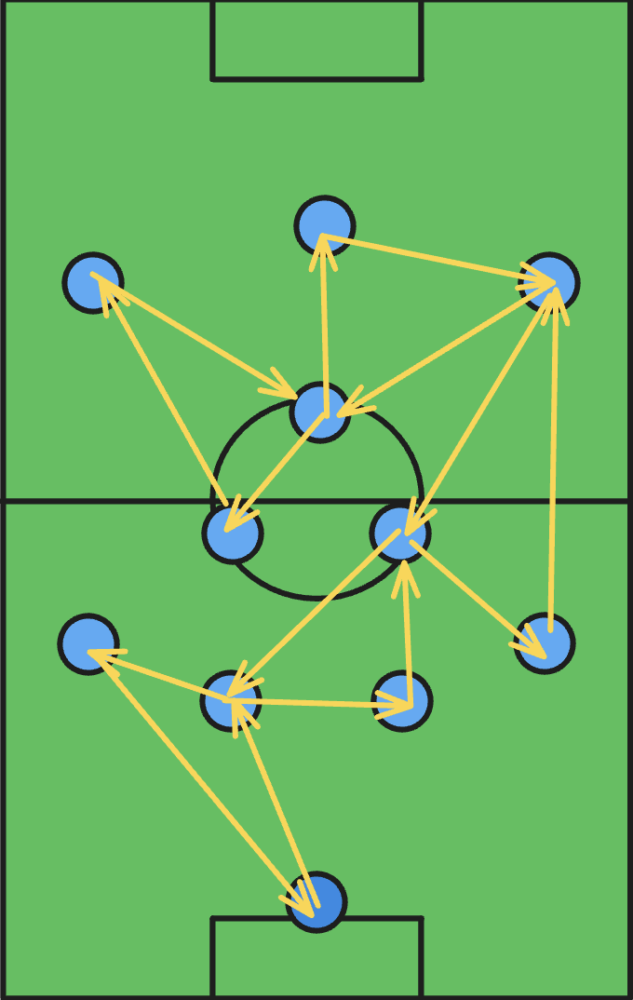
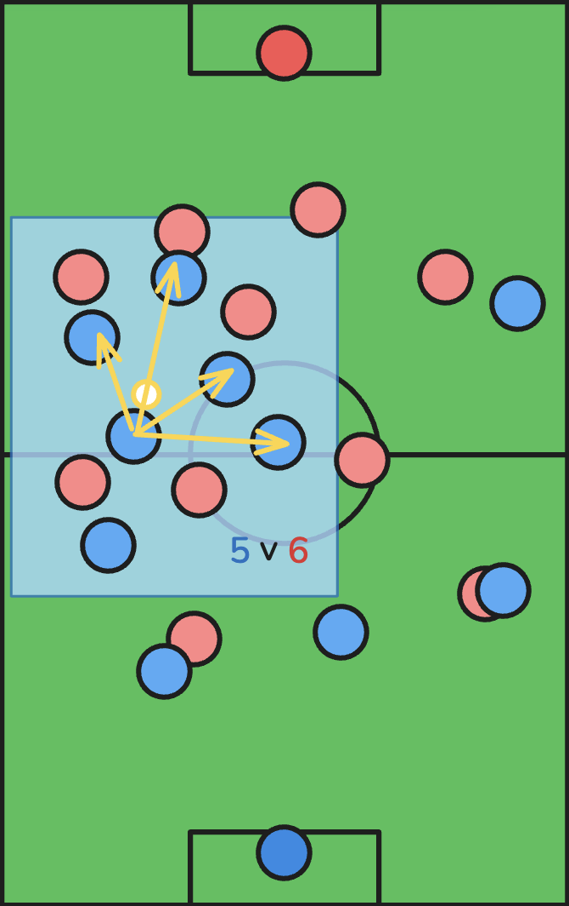
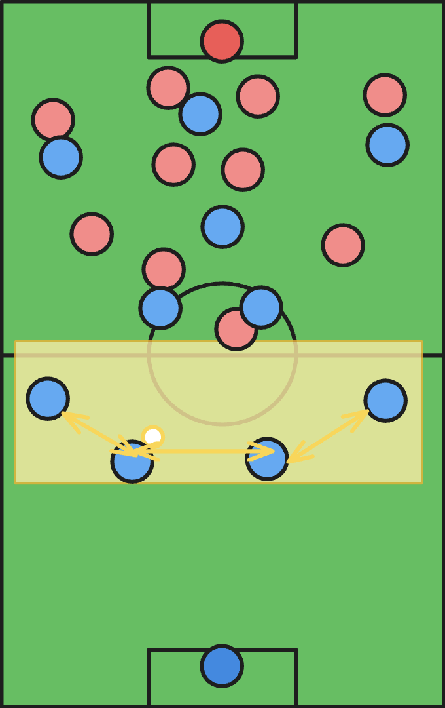
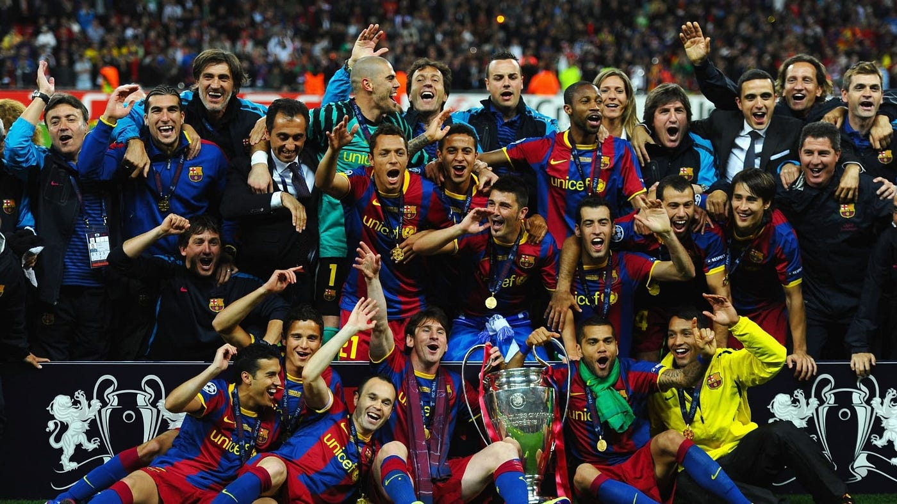
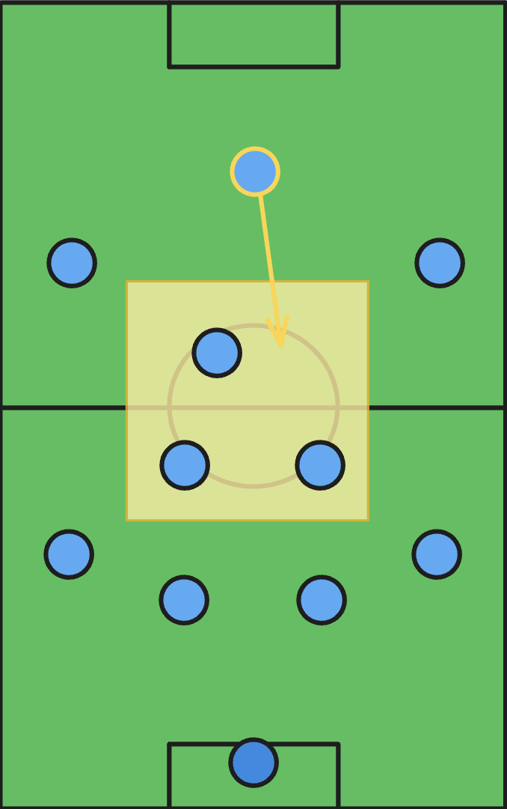
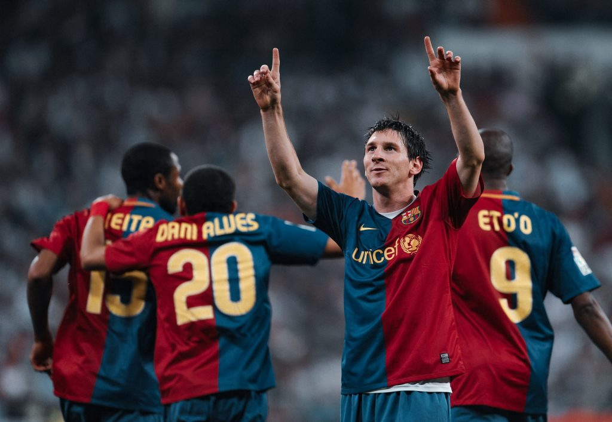

What is Possession?
Possession soccer is a style of play that focuses on maintaining
control of the ball for extended periods of time. Teams that play
possession-based soccer aim to dictate the pace of the game and
wear down opponents through patient buildup play.
This style is characterized by short, quick passes, constant
movement, and technical skill. Players must be comfortable
receiving the ball under pressure and making decisions quickly.
The image shown illustrates the triangles made to create passing
options in a 4-3-3 formation. The 4-3-3 formation is one of the
best formations for possession soccer because of how easy it is to
form triangles.

Advantages
The main advantage of possession soccer is control. By keeping the
ball, teams prevent their opponents from scoring while conserving
energy. This style also allows teams to methodically break down
defensive structures.
When executed properly, possession play can be both effective and
beautiful to watch. Teams can create numerical advantages in
different areas of the field, making it easier to progress the
ball forward and create scoring opportunities.

Disadvantages
Possession soccer requires highly skilled players with excellent
technical ability and game intelligence. It can be difficult to
implement without the right personnel.
Another disadvantage is that possession without purpose can be
ineffective. Teams can fall into the trap of passing sideways and
backwards without creating meaningful chances. The image to the
left shows how opposition teams can just sit back, reducing the
threat. Additionally, possession teams can be vulnerable to
counter-attacks if they commit too many players forward.
Key Characteristics of Possession Play
- Possesion prioritizes short, quick passes that maintain ball control.
- Players constantly move to create passing angles and options- this is where the triangles come in. Giving players at least 2 options to pass is key, as it gives players more options to pass to, and therefore more options for the defense to cover.
- Technical skill is prioritized over physical attributes, as players should be able to move the ball quickly with ease.
- The main idea is to use patient buildup play that draws opponents out of position.
- Players must understand their role well- understand positional play where players occupy strategic spaces on the field to spread the opposition and and create space for teammates to exploit.
Possession Play in Action



FC Barcelona
Barcelona under Pep Guardiola (2008-2012) perfected the
possession style known as "tiki-taka." Their team featuring
Xavi, Iniesta, and Messi dominated world football with short
passing and intelligent movement.
Barcelona's philosophy emphasized technical skill and
positional awareness, allowing them to maintain possession
even against aggressive pressing. This approach led to
numerous trophies including two Champions League titles.
The False 9
Famously, Barcelona implemented a 'false 9' formation. It's a 4-3-3 where the top striker would drop deep to recieve the ball, adding an extra player in the midfield. They acted like another midfielder, connecting the midfield and attack. This is a huge responsibility as the striker needs to create chances, requiring excellent ball control, vision, and passing skills.
The Goat
Luckily for Barcelona, they had Messi, the best player in the world at the time (and arguably the best player of all time). It was in 2012 when possession football showed its true power when combined with the best player in the world. In the 2012 season, Messi went on to score 91 goals in 69 games (and have 24 assists on top of that). Absolutely insane.